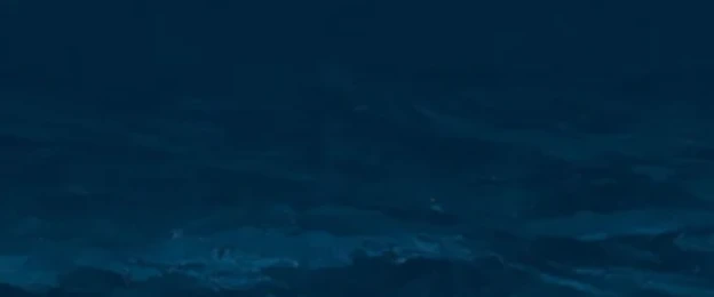
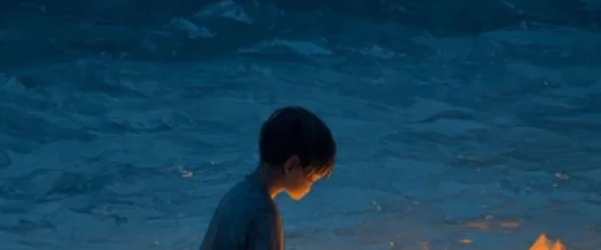
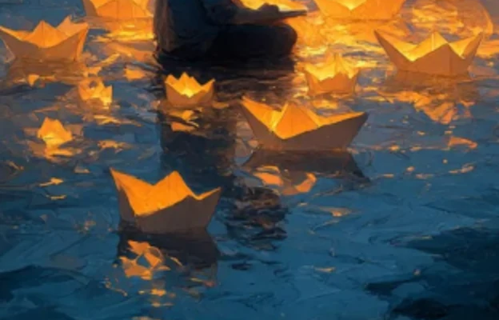
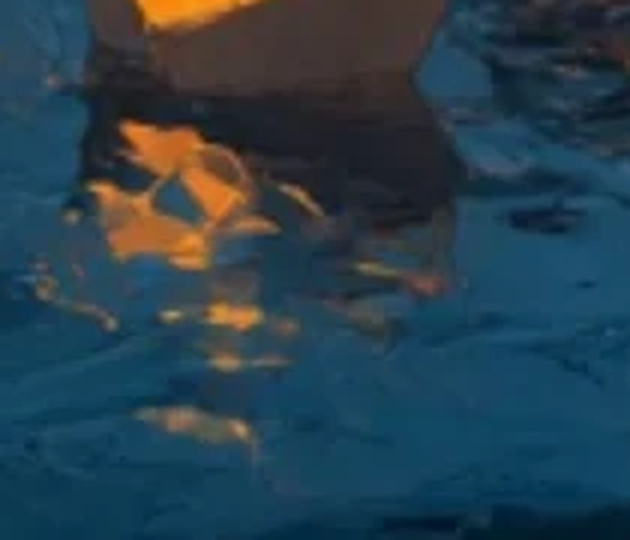

The second asset, built on the round-two boat. The reference water isn't photographic: it's painted in long horizontal brush strokes, and light lands stroke by stroke. We tried angular plates, then painted strokes. Smooth ripples are the pick for now, and Strokes stays one click away in the lab.
The lab below lets you try every option. My recommendation is marked on each.
Crops from the reference, enlarged, plus the colour measured down a strip of open water from top to bottom.




Real reflections, candlelight on the water from every boat, and painted strokes that drift with the wind. Turn Lit off and hover or click a boat to light it. Layer isolates each ingredient.
Each layer is a few lines of shader code on a single plane. Click one to isolate it in the lab.
The measured gradient: near-black far away, lifting through the middle, dark again in the foreground. Each stroke is nudged a little lighter or darker.
A noise field stretched about 5× sideways and gently warped makes long brush marks, stepped into tones like a loaded brush. Stroke size and Wind control them.
A crisp glint only on stroke crests facing the moon, plus a faint pale edge on the brightest strokes. It's rare on purpose.
A real mirror image of the scene, pulled down into vertical streaks and broken along the strokes.
Every boat's flame lights the strokes around it, in pieces rather than a smooth pool. It flickers with the boat and follows Ignite.
A Kuwahara filter, which flattens areas into strokes while keeping edges sharp, plus bloom, a dark frame top and bottom, and fine grain.